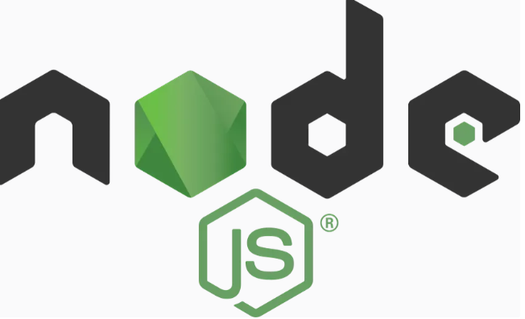
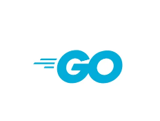
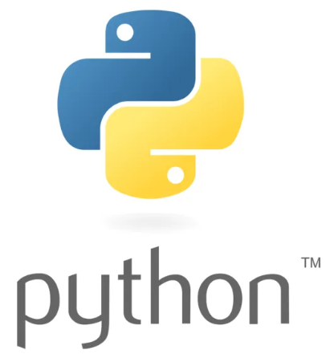

Arquitectura No Bloqueante

Node.js
Utiliza un solo hilo con I/O no bloqueante, delegando operaciones de red al motor libuv para máxima eficiencia.

Go
Permite manejar cientos de miles de conexiones concurrentes utilizando rutinas ligeras gestionadas por el runtime de Go.

Python
Permite gestionar WebSockets de forma asíncrona integrando el motor asyncio para una escalabilidad extrema.

C#
Abstrae la comunicación en tiempo real seleccionando automáticamente WebSockets, Server-Sent Events o Long Polling.